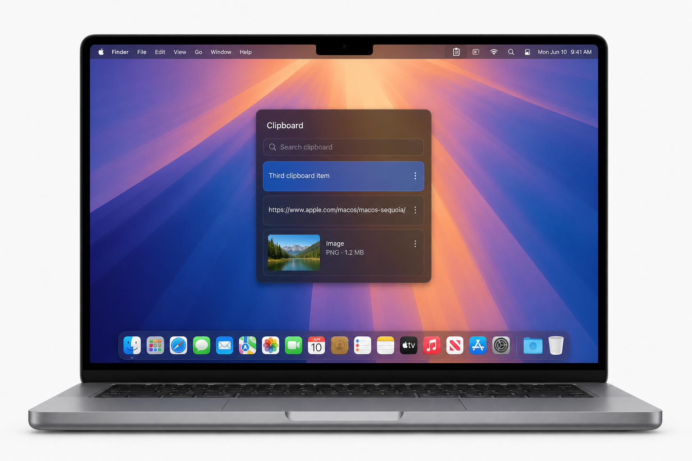

Copy normally. Retrieve anything later.
Plain and rich text from Safari, Chrome, Cursor, Notes, Slack, Mail, and Terminal. Duplicate copies move to the top instead of flooding history.
macOS clipboard history
MacClipboard is a free native menu-bar utility for Apple Silicon Macs. Copy with ⌘C, press ⌃⌥V, then Enter — the selected item pastes into Cursor, Safari, Notes, or whatever you were using.

Everything you need to paste
Text, links, images, and files — searchable, pinnable, and pasted with Enter.
Plain and rich text from Safari, Chrome, Cursor, Notes, Slack, Mail, and Terminal. Duplicate copies move to the top instead of flooding history.
Copied URLs show domain and path. Search matches the full address so you can find that one deployment URL instantly.
Images from screenshots, browsers, and design apps appear with a preview. Select and press Enter to paste the original back.
When the pasteboard exposes file URLs, MacClipboard keeps the filename, icon, and path. Missing files are marked unavailable.
Default is Control-Option-V. Record ⌥V, ⌘⇧V, or any sensible combination. Common conflicts such as ⌘C and ⌘F warn you, then let you use them anyway.
No accounts, no cloud, no analytics. Exclude password managers, pause monitoring, and clear history. Transient and concealed pasteboard markers are skipped.
Instead of losing the last copy, MacClipboard keeps a local history in the menu bar. A compact floating panel appears on the display you’re using. Arrow keys to browse, Enter to paste into the previous app. Native Swift, SwiftUI, and AppKit — not a website in a wrapper.
Built for Apple Silicon MacBooks: M1, M1 Pro, M2, M3, M4, and newer. History survives restart. Pinned items stay when you clear the rest.
⌘C in any Mac app. MacClipboard watches the pasteboard in the background.
Press ⌃⌥V. A lightweight panel appears over your MacBook screen.
Select an older item. It is pasted into Cursor, Safari, Notes, Slack, or Terminal.
Ad-hoc signed Apple Silicon build. After unzipping, move the app to Applications.
Download for MacInstall & Gatekeeper guide · macOS 14 or later · Apple Silicon